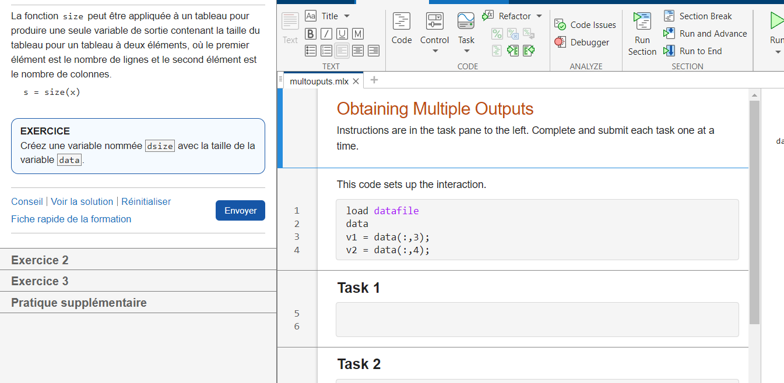
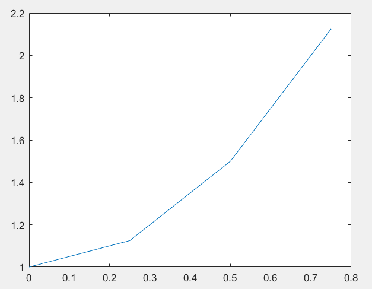
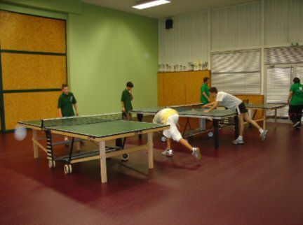

Bienvenue sur mon portfolio
Je suis Quentin JAY, étudiant en 2ème année de Bachelor Universitaire Technologique Réseaux et Télécommunications. Ce portfolio présente mon parcours académique, mes compétences et mes projets.
Naviguez à travers les différents onglets pour découvrir mon profil complet :
- À propos - Pour mieux me connaître
- Formation - Mon parcours académique
- Expérience - Mes expériences professionnelles
- Compétences - Mes compétences techniques et qualités
- Projets - Les projets que j'ai réalisés
- Divers - Mes centres d'intérêt et autres infos
- CV - Mon curriculum vitae
- Contact - Pour me contacter
À propos de moi
Actuellement étudiant en deuxième année de Bachelor Universitaire Technologique en Réseaux et Télécommunications.
Mon parcours académique a débuté avec l'obtention d'un baccalauréat STI2D, où j'ai développé des compétences en sciences et technologies industrielles.
Au-delà de mes activités académiques, je trouve un équilibre dans ma vie en consacrant du temps à mes passions.
Je souhaite poursuivre mes études en intégrant une école d'ingénieur l'année prochaine.
- Nom : Quentin JAY
- Formation : BUT Réseaux et Télécommunications
- Langues : Français (natif), Anglais (C1)
- Localisation : Clermont-Ferrand, France
Formation
IUT d'Aubière - 63170
Ma formation actuelle en Réseaux et Télécommunications vise à approfondir mes connaissances dans ce domaine en constante évolution. Les cours couvrent une gamme variée de sujets, allant des fondements théoriques aux applications pratiques. Je participe activement aux travaux dirigés, aux projets de groupe et aux activités pratiques pour enrichir mon apprentissage.

Lycée Lafayette de Clermont-Ferrand - 63000
Mon parcours académique a débuté avec l'obtention d'un baccalauréat STI2D, où j'ai acquis des bases dans le domaine pratique des technologies. Cette expérience a été déterminante dans ma décision de poursuivre mes études en Réseaux et Télécommunications, en mettant en lumière mon intérêt particulier pour l'aspect pratique des sciences et technologies.
Expérience professionnelle
Tournant de cuisine
Durant ce travail d'été de trois semaines au service restauration de l'Hôpital Sainte-Marie, j'ai acquis une expérience précieuse.
Responsabilités et réalisations :
- J'ai assuré l'hygiène et la propreté des ustensiles et équipements de cuisine.
- J'ai contribué à la préparation des repas en scellant des barquettes pour garantir une distribution efficace.
- J'ai préparé les chariots en fonction des commandes reçues, en veillant à ce que chaque service dispose des repas appropriés.
Cette expérience m'a permis de développer des compétences organisationnelles et de découvrir l'importance du travail d'équipe dans un contexte professionnel.

Assistant Technicien de Surface
Durant ce stage enrichissant d'une semaine à l'EHPAD de Lempdes, j'ai eu l'opportunité de contribuer au bien-être des résidents.
Responsabilités et réalisations :
- J'ai effectué des tâches de nettoyage approfondi, garantissant la propreté et l'hygiène des espaces communs.
- J'ai appris à travailler efficacement dans un environnement professionnel, développant des compétences en gestion du temps.
Cette expérience m'a permis de découvrir l'importance du travail d'équipe dans un contexte professionnel. Elle a également renforcé ma capacité à gérer des tâches variées de manière organisée et efficiente.
Compétences
Compétences techniques
Télécommunication :
Mesurer la vitesse de la lumière dans un câble coaxial :
Au cours des travaux pratique en Télécommunication, j'ai pu mesurer la vitesse de propagation de la lumière dans un câble coaxial. Pour y arriver, j'ai dû connecter un câble coaxial de 1m et un autre de 100m à la sortie d'un générateur basse fréquence qui vont chacun à une entrée d'un oscilloscope. Pour mesurer la vitesse, on compare la différence de temps entre le signal qui passe par le câble 1m et celui qui passe par l'autre câble. Je suis maintenant capable de mesurer la vitesse de propagation de câbles ce qui est important dans le domaine de la Télécommunication.
Résultat :
Réseau :
Création d'un plan d'adressage :
Durant le BUT Réseaux et Télécommunications, j'ai étudié les réseaux et j'ai pu apprendre à travers les TD en utilisant Cisco Packet Tracer. J'ai créé un plan d'adressage attribuant à chaque machine une adresse IP afin de leur permettre de communiquer, et j'ai également mis en place un serveur DHCP pour l'adressage automatique.
Résultat :
Programmation Web :
Création d'une page Web HTML/CSS :
Lors des TD de programmation Web, j'ai appris à créer des pages web en utilisant HTML et CSS pour concevoir des interfaces graphiques et modifier l'apparence du contenu.
Résultat :
Téléphonie :
Configuration d'un call server :
Lors des travaux pratiques de téléphonie, j'ai appris à configurer un call server et à faire fonctionner des téléphones. J'ai suivi pas à pas les instructions du TP, effectué un compte rendu et je suis désormais capable d'apporter des modifications pour rendre les équipements fonctionnels. J'ai obtenu la note de 19,5 lors de l'évaluation.
Résultat :
Cybersécurité :
Configuration d'un call server :
De façon similaire à la téléphonie, j'ai appris à configurer un call server et à manipuler ses paramètres afin de garantir la sécurité des échanges. J'ai obtenu la note de 19,5 lors de cette évaluation.
Résultat :
Qualités
Persévérant
Durant le projet de SAE23, alors que je rencontrais un problème bloquant la création d'un utilisateur, j'ai persévéré pendant une séance entière jusqu'à corriger l'erreur.
Autonome
Lors d'un TP en télécommunication, j'ai dû travailler seul pendant trois heures, ce qui m'a permis de gagner en autonomie.
Travail d'équipe
Au cours d'un TP sur Internet, mon coéquipier et moi avons réparti intelligemment les tâches afin d'optimiser notre efficacité.
Compétences linguistiques
Anglais
Niveau C1
Projets
Projet 1 : SAE24 - Projet intégratif
Description : Durant la SAE24, j'ai été chargé de créer un réseau d'entreprise avec tout le matériel nécessaire.
Étapes réalisées :
- Conception du réseau
- Configuration des équipements
- Tests de connectivité
- Documentation du projet

Projet 2 : SAE14 - Portfolio et CV
Description : Durant la SAE14, j'ai entrepris la création de mon CV et de mon portfolio pour présenter de manière professionnelle mes compétences et expériences.
Étapes réalisées :
-
Conception de CV avec Canva :
J'ai utilisé Canva pour élaborer un CV visuellement attrayant, mettant en avant mes compétences, ma formation et mes réalisations. La plateforme m'a permis de jouer avec la mise en page et les éléments graphiques pour créer une présentation unique.
-
Développement web avec HTML/CSS :
Pour mon portfolio, j'ai d'abord créé la structure du portfolio qui se compose de 8 parties. J'ai ensuite écrit le contenu du portfolio en m'appuyant sur les consignes. Durant la création du portfolio, j'ai eu des difficultés pour créer les jauges pour les compétences, que j'ai résolues en cherchant sur internet. J'ai intégré le CV réalisé durant ce projet dans le portfolio.
Résultats :
-
CV professionnel :
Grâce à ce projet, j'ai créé un CV structuré, clair et concis, mettant en évidence mes compétences et expériences de manière professionnelle.
-
Portfolio interactif :
Avec ce projet, j'ai créé un portfolio codé en HTML/CSS, ce qui m'a permis de m'améliorer sur le codage HTML et CSS.

Projet 3 : SAE15 - Analyse de planning
Étapes réalisées
-
Changements des fuseaux horaires
J'ai changé automatiquement les fuseaux horaires qui étaient en GMT+0 pour les mettre en format français.
-
Code pour exploiter le tableau excel
J'ai écrit un code qui exploite les données du tableau excel pour donner les dates de reprises de chaque groupe.
Résultats
J'ai créé le code permettant à un élève de connaître les dates de reprise des cours après les vacances pour chaque groupe de TD et TP et ai obtenu la note de 20.


Projet 4 : SAE22 - Matlab
Description
Au cours de la SAE22, j'ai dû apprendre le codage Matlab.
Objectif du projet
Faire des programmes répondant aux exigences du projet.
Étapes réalisées
-
Formation Matlab Onramp
J'ai réalisé l'autoformation Matlab Onramp.
-
Manipulation de signaux sur Matlab
J'ai créé, affiché et modifié des signaux sinusoïdaux avec Matlab pour pouvoir les exploiter.
-
Intégration d'une fonction
J'ai calculé l'intégrale d'une fonction avec différentes méthodes : la méthode des rectangles, des trapèzes et de Simpson.
-
Étude d'un signal temporel
J'ai étudié des fonctions générées à l'oscilloscope avec Matlab.
Résultats
Travail toujours en cours.




Divers
Vélo
Depuis mon enfance, je fais régulièrement du vélo. Cette activité me permet de me détendre et de passer du temps tout seul. Le vélo fait partie intégrante de mon quotidien.
Tennis de table
J'ai pratiqué le tennis de table pendant 2 ans jusqu'à avant le confinement en 2020. Cette expérience m'a apporté non seulement un plaisir sportif, mais aussi des compétences en termes de concentration, de coordination et de fair-play.

CV
Mon CV
Téléchargez mon CV iciContact
- Email: quentin.jay2@etu.uca.fr
- Téléphone: +33 7 71 24 26 84
- Localisation: Clermont-Ferrand, France
- LinkedIn: linkedin.com/in/quentin-jay/
- GitHub: github.com/quent1no